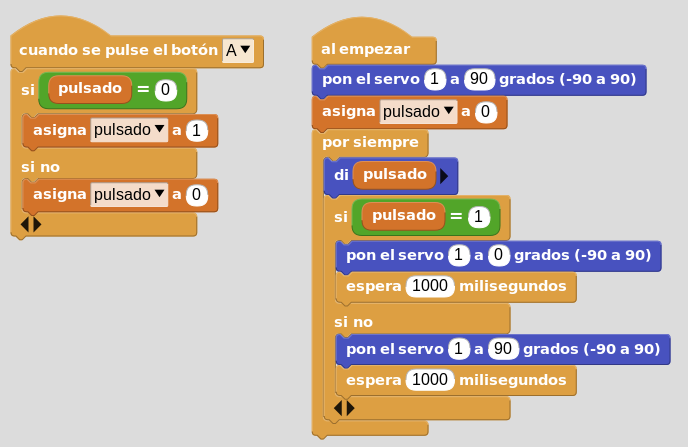
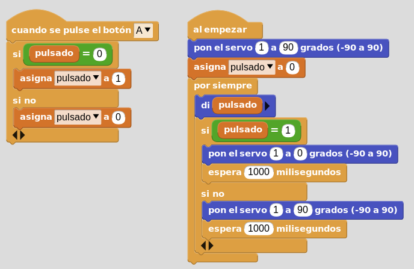

Tarea control de barrera con un botón y variable
Cuando pulsas el pulsador "A" el estado de la barrera debe cambiar, si está abajo debe subir y si está arriba debe bajar. Al principio la barrera debe estar abajo.

Código:

Cuando pulsas el pulsador "A" el estado de la barrera debe cambiar, si está abajo debe subir y si está arriba debe bajar. Al principio la barrera debe estar abajo.
Código:

Obra publicada con Licencia Creative Commons Reconocimiento Compartir igual 4.0